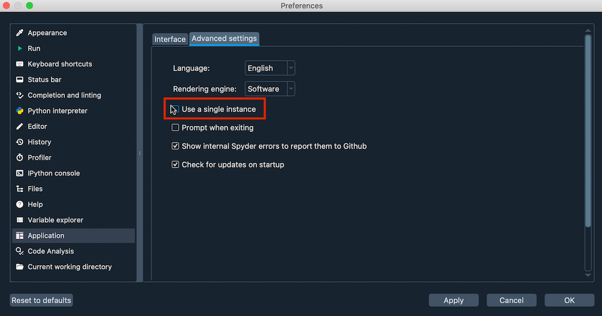
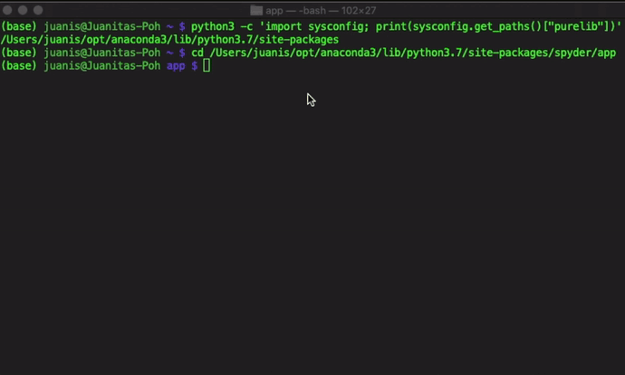

Kit de emergencia#
¿Spyder no se está lanzando en lo absoluto? Esperemos que los pasos en esta sección lo vuelvan a poner en marcha en poco tiempo.
Soluciones comunes#
Prueba primero Primera ayuda básica, que normalmente resuelve la mayoría de los problemas relacionados con la instalación de Spyder.
Asegúrate de que Spyder no se esté ejecutando y de que no haya ventanas relacionadas con Spyder abiertas (por ejemplo los diálogos Explorador de variables) y comprueba que la configuración de preferencias no está seleccionada.
Intenta iniciar Spyder por medios diferentes, como por ejemplo desde un acceso directo, Anaconda navigator o tu línea de comandos (o Anaconda Prompt en Windows) simplemente escribiendo
spyderluego Enter/Return, y observa si alguno de esos medios funciona. De ser así, entonces algo está mal con tu instalación, no con Spyder en sí, por lo que recomendamos seguir Reinstalar Spyder para desinstalar y reinstalar Anaconda.Desactiva cualquier software de seguridad que estés usando, como un firewall o antivirus, ya que estos productos pueden interferir ocasionalmente con Spyder o sus paquetes relacionados. Asegúrate de volver a activarlo si esto no soluciona el problema, y si lo hace, agrega una regla o excepción para Spyder o Python.
Si actualmente está instalado «solo para ti», intenta desinstalar y reinstalar Anaconda «para todos los usuarios», y viceversa, ya que algunos sistemas pueden tener problemas con uno u otro método de instalación.
Comprueba y repara o reestablece tus permisos, tu disco y tu sistema operativo si todo lo demás falla.
Trucos avanzados#
Si nada de lo anterior resuelve el problema, puedes intentar iniciar Spyder directamente desde sus archivos fuente de Python, lo que puede hacer que se ejecute, o al menos proporcionar información útil para ayudar a depurar aún más el problema.
Esta técnica consiste en iniciar Spyder desde tu terminal (o Anaconda Prompt en Windows) ejecutando manualmente la rutina de inicio de Spyder ( start. y ) con un buen intérprete de Python conocido, y observando los resultados.
Para hacerlo, necesitarás:
Encuentra la ruta al directorio
appde Spyder desde la línea de comandos. Para esto, ejecuta:python3 -c 'import sysconfig; print(sysconfig.get_paths()["purelib"])'
Vaya a la ruta de salida del comando anterior en tu línea de comandos:
cd <OUTPUT-PATH>/spyder/app
Una vez dentro del directorio
app, ejecutapython start.pypara iniciar Spyder.
Si no se inicia con éxito, deberías ver un seguimiento de errores impreso; cópialo cuidadosamente para futuras referencias. También ejecuta python mainwindow.py, y registra sus resultados también.
(Solo Windows) En caso de que la ventana de comandos desaparezca inmediatamente después del error, crea un archivo
.baten el directorioappcon el siguiente contenido:<PYTHON-PATH> start.py pauseReemplaza
<PYTHON-PATH>con la salida de:python -c 'import sys; print(sys.executable)'
Luego, haz doble clic en el archivo por lotes para ejecutarlo, y deberías ver la información de error que necesitas.
Si leer el resultado (particularmente la última línea) no te ayuda a resolver el problema, regístralo todo cuidadosamente y publícalo como parte de tu informe de error como se describe en la sección Enviar un reporte .